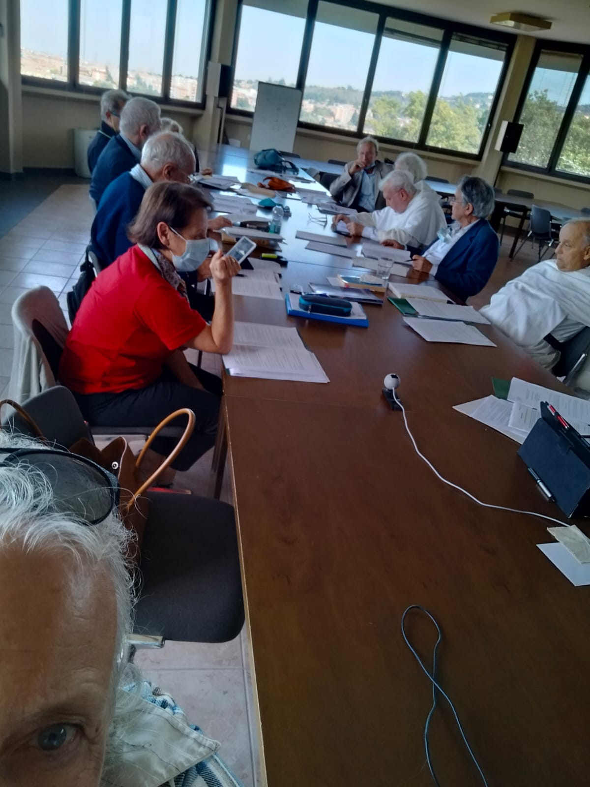

CONVEGNO
"SCIENZA E
METAFISICA" 2021
In
collaborazione con lo Studio Filosofico Domenicano di Bologna
e
l’Istituto Filosofico di Studi Tomistici di Modena
Scienza
e Metafisica - XXXIX convegno
Villa San Giacomo
Ponticella di San Lazzaro di Savena (BO)
1 - 3 ottobre 2021
LA COSCIENZA: CONSAPEVOLEZZA DI SÉ
INVITO
LEGGI
CONTRIBUTI
Il
dibattito dello scorso anno ha portato i presenti a decidere, per il convegno del 2021,
di provare a stendere un documento condiviso da pubblicare. Occorreva
però una bozza dalla quale partire. Il prof. Massimo Roncoroni ha
accettato di redigerla, cercando di tener conto delle opinioni presenti
nei contributi del convegno dell'anno passato. La bozza è stata mandata a tutti con la richiesta di fornire modifiche, aggiunte e suggerimenti vari. Il dibattito è così iniziato ancora prima del convegno. Inoltre
alcuni di noi hanno voluto inviare alcuni studi che potessero allargare
il punto di vista presentato al convegno del 2020. Come
era prevedibile, la stesura di un documento condiviso dai partecipani
non poteva essere terminata nell'arco di un giorno e mezzo, nonostante
un ritmo di lavoro particolarmente faticoso. Non
daremo quindi un risultato al quale i partecipanti hanno deciso di
lavorare ancora durante l'anno in corso, in attesa di ritrovarsi
nell'autunno del prossimo anno. Forniamo solo quanto è stato portato al
convegno come materiale sul quale lavorare.
La bozza di documento sulla quale lavorare: LEGGI
Contributi dei partecipanti indipendenti dalla bozza:
Mario Di Febo: Riflessioni sulla coscienza (versione rivista del contributo dell'anno precedente) LEGGI Mario Di Febo: Appunti per un modello matematico della coscienza LEGGI
Alfredo Spadoni: Mente - cervello LEGGI
Contributi dei partecipanti alla bozza (aggiunte, modifiche, altre osservazioni):Giovanni Bertuzzi: LEGGI Giovanni Cavalcoli : LEGGI Gabriele Falciasecca: LEGGI Osservazioni del prof. Sergio Galvan (Logica, Univ. Cattolica Milano) al prof. Falciasecca: LEGGI Risposta del prof. Falciasecca al prof. Galvan: LEGGI
Sergio Parenti: LEGGI
PARTECIPANTI
P.
Giovanni Bertuzzi (filosofia,
teologia), P. Giovanni Cavalcoli (filosofia, teologia), Dott.
Maria Grazia Capella (scienze cognitive), Prof.
Rita Casadio
(bioinformatica), Prof.
Mario Di Febo (informatica, teologia), Prof. Gabriele Falciasecca
(elettronica, informatica), Ing. Fabio Frattini
(ingegneria nucleare), Prof. Jaime Julve Pérez (fisica), P. Sergio
Parenti (teologia), Prof. Massimo Roncoroni (filosofia), Dott. Giuseppe
Rubino (psichiatria, psicoanalisi); Prof. Alfredo Spadoni (fisica; solo
il contributo).

|